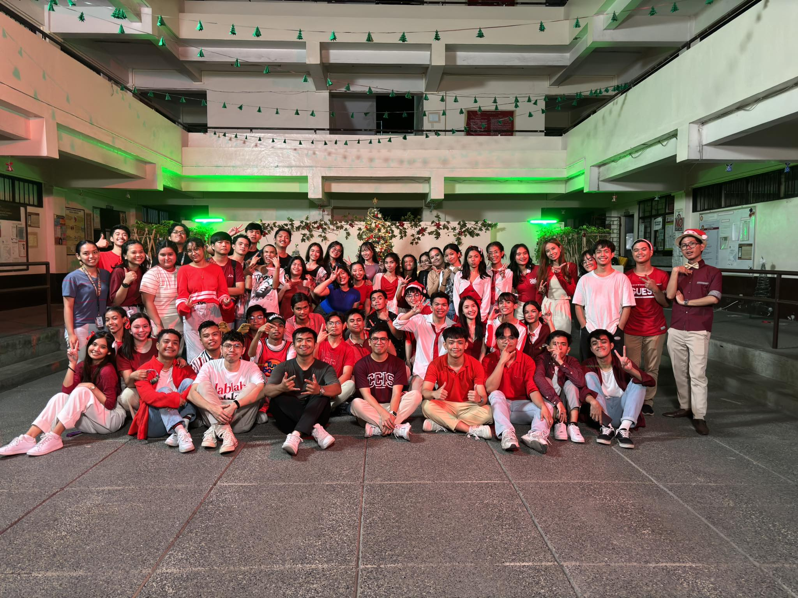
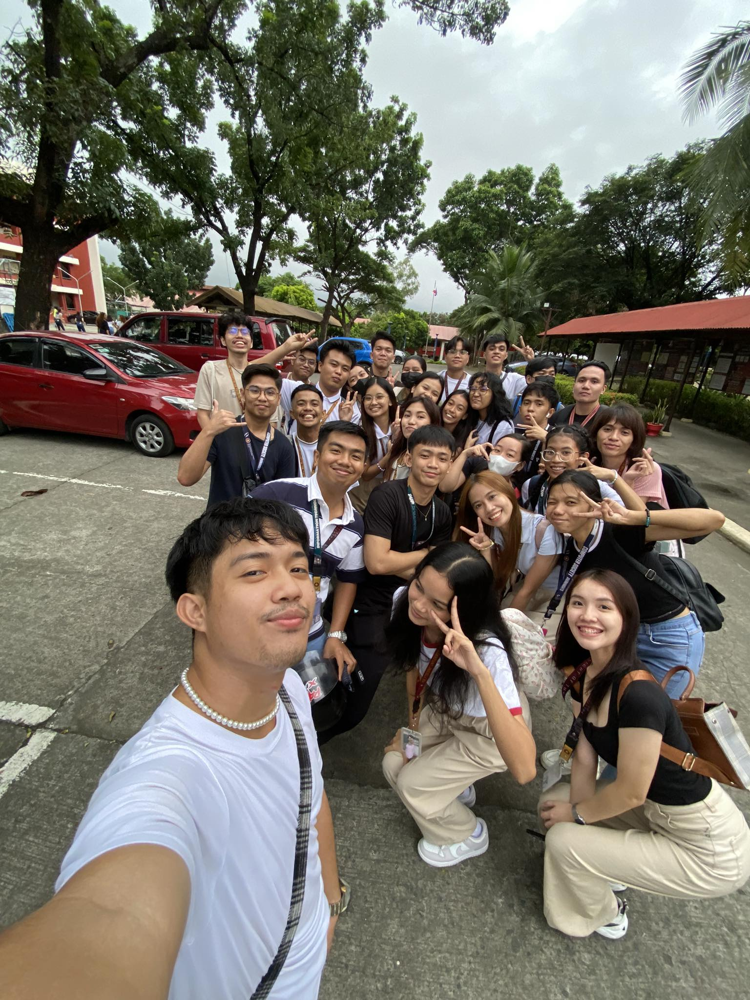
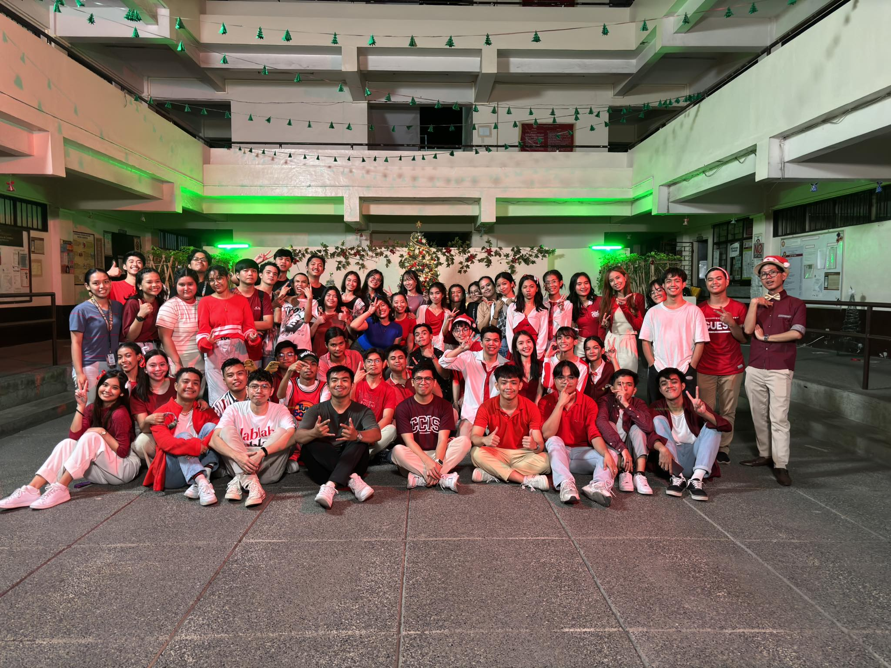
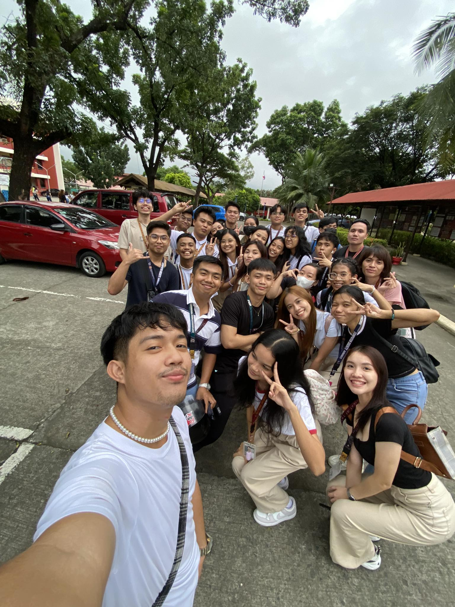

Who am I, in this World?
These past few months as a third-year student have been very challenging for me. I don't know why, but this year and semester have been the most difficult for me. Many things have happened that make me question myself, like the recurring question in my mind, 'Am I on the right path in my life and course?' or even asking myself, 'Do I really belong to the IT course?.
I've encountered a lot of breakdowns and felt so lost in the past few months, wondering if I truly suit or fit into this world. However, I guess I should also be thankful because now I am able to see and feel the glimpse of reality after being a student. I've realized that my life doesn't end after I graduate; it's just the start of the journey of my life. But to be honest, even right now, as a third-year student, I can't help but feel the pressure, asking questions like 'Can I even graduate in IT?' or 'Will I be able to get a job aligned with what I've studied, which is IT?
"Next year, it will already be 2024, and we'll be finishing our first semester as third-year students. My only goal for the next year is that the pressure and overwhelming feelings I am experiencing right now will be more of a challenge than a reason to question myself—a challenge that I can overcome and one that I will soon recall and refer to as a beautiful lesson in my life.
Comments
Chrystine Noelle: Kyla, your goals reflect a strong determination to excel academically and provide for your family.
Mark: I agree with what Chrystine said
Sam: Hey, Kyla! Keep working towards your goals.
Via: I believe in your ability to achieve these.